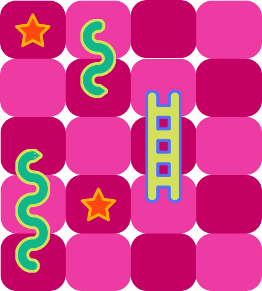

Snakes and Ladders is a timeless classic that has been enjoyed by millions of people for generations.
Now, with the advent of technology, you can experience
the excitement of this classic board game from the comfort
of your own home!!
Roll the dice, move your piece, and try to reach the finish before your opponents.
Along the way, you'll encounter snakes that will send you back down the board and ladders that will help you climb higher.